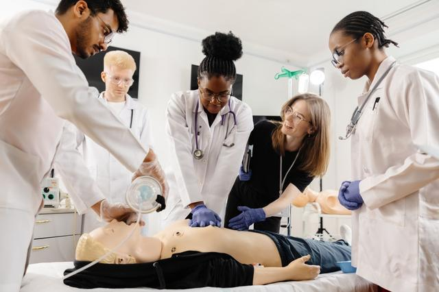
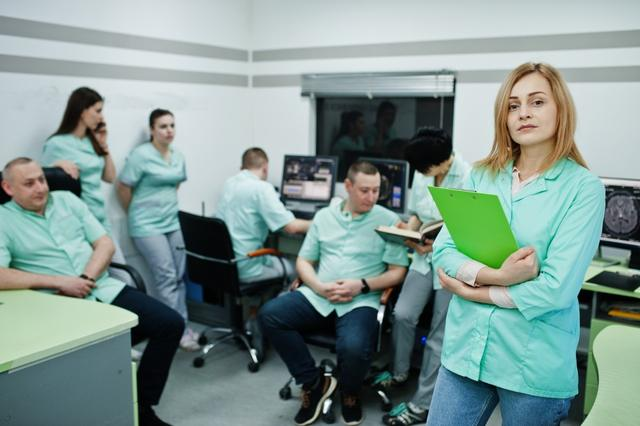
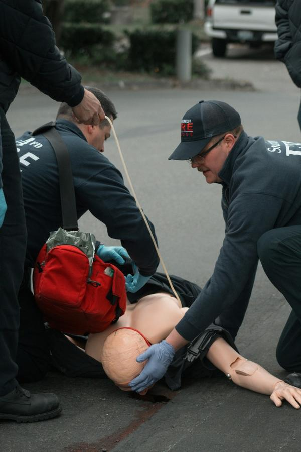

ARA Annecy · Sud de Lyon · intra
Cap sur le sommet : AFGSU 2 en Auvergne-Rhône-Alpes
Prix de départ : 450 €385 € TTCpar participant (inter) · paiement possible en 4x sans frais
21 h · 3 jours · valable 4 ans
Annecy et le Sud de Lyon accueillent les sessions inter ; partout ailleurs dans la région — Grenoble, Clermont-Ferrand, Saint-Étienne, Chambéry, Valence — la formation monte jusqu’à votre établissement. Trois jours de pratique encadrée, en cordée de 10 à 12.
Faites défiler : l’altimètre monte, les camps s’ouvrent
Ici, chaque heure de formation vaut 100 mètres de dénivelé : 21 heures, 2 100 mètres. Aucune portion en ligne : on progresse en présentiel, et la validation repose sur la pratique et les mises en situation simulées.
-
atteint
0 m · Camp de base
Le point de départ
Prérequis : appartenir au public visé
Le camp de base, c’est le niveau de l’AFGSU 1, pensée pour les non-soignants. Les soignants, eux, partent directement vers le sommet : l’AFGSU 1 n’est pas exigée avant le niveau 2. Dans le sac à dos : votre diplôme, votre carte professionnelle et votre inscription RPPS ou ADELI — un certificat de scolarité si vous êtes étudiant.
-
1 050 m
Camp I · jour 1 et matin du jour 2
Urgences vitales
10 h 30 de pratique · adulte, enfant, nourrisson
- Protection, alerte au 15 / 112
- Obstruction des voies aériennes
- Hémorragies
- Inconscience avec respiration
- Arrêt cardiaque : RCP et DAE
- Chariot d’urgence, oxygénothérapie
-
1 750 m
Camp II · après-midi du jour 2 et matin du jour 3
Urgences potentielles
7 h de pratique
- Malaises
- Traumatismes : osseux, cutanés, crâniens, rachis
- Brûlures
- Immobilisation, relevage, brancardage
- Accouchement inopiné
- Hygiène et risque infectieux
- Transmission du bilan
-
2 100 m
Camp III · après-midi du jour 3
Urgences collectives & SSE
3 h 30 de pratique
- ORSAN
- Plan blanc, plan bleu
- Afflux de victimes
- Risque NRBC-E
- Évacuation, confinement
- Soutien médico-psychologique
-
Sommet · 2 100 m
Votre attestation AFGSU 2
Délivrée par le CESU — la formation est organisée sous convention avec le CESU 93 —, après une évaluation continue et une présence complète sur les trois jours, sans examen final séparé. Validité : quatre ans.
Viser le sommet en session
Répartition indicative des modules sur les trois jours.
Deux points de départ, toute la région accessible en intra
L’intra, voie normale de la région
Hôpital, clinique, EHPAD, cabinet, officine ou centre de santé : nous montons jusqu’à vous, pour un groupe de 10 à 12, aux dates de votre choix — y compris dans les vallées et les stations. Partout en France également. Tarif sur devis.
Faire monter la formation chez nousAFGSU 1, AFGSU 2 : deux altitudes, deux publics
AFGSU 2
450 € 385 € TTC
- Public
- Professionnels de santé (4e partie du CSP), leurs étudiants, AES/AMP, ARM, assistants médicaux, préleveurs sanguins, auxiliaires ambulanciers
- Durée
- 21 h sur 3 jours
- Niveau
- Gestes avancés et risques collectifs
- Validité
- 4 ans, prolongés par le refuge (recyclage de 7 h)
AFGSU 1
290 € TTC
- Public
- Les fonctions sans soin qui font vivre un lieu de santé, un établissement médico-social ou un cabinet : agents d’accueil, secrétariat, équipes administratives, logisticiens, techniciens
- Durée
- 14 h sur 2 jours
- Objectif
- Identifier l’urgence vitale ou potentielle, poser les bons gestes, participer à la réponse collective
- Validité
- 4 ans
Qui s’encorde pour le niveau 2
- Médecins
- Infirmiers
- Aides-soignants
- Sages-femmes
- Masseurs-kinésithérapeutes
- Pharmaciens
- Préparateurs en pharmacie
- Ambulanciers
- Auxiliaires de puériculture
- Manipulateurs radio
- Chirurgiens-dentistes
- Étudiants de ces professions
- AES / AMP
- Assistants de régulation médicale
- Assistants médicaux
- Préleveurs sanguins
- Auxiliaires ambulanciers
Prérequis
Être membre de la cordée ci-contre, c’est-à-dire relever des professions de santé de la 4e partie du Code de la santé publique ou des métiers associés. Pas d’AFGSU 1 à présenter.
Justificatifs
- Diplôme
- Carte professionnelle
- Identifiant RPPS / ADELI (étudiants : certificat de scolarité)
- Recyclage : attestation précédente
Cadre réglementaire
Arrêté du 30 décembre 2014 (modifié en 2019 et 2021). Équivalence PSC prévue par l’arrêté du 23 août 2019 ; aucune équivalence avec le SST.


Le refuge, tous les quatre ans
L’attestation reste valable quatre ans. Pour la prolonger, une halte de 7 heures au refuge — le recyclage — à faire avant l’échéance. Passé ce cap, il faut repartir du camp de base pour les 21 heures complètes. Conseil de guide : réservez 3 à 6 mois avant, avec votre attestation actuelle. Le tarif du recyclage est donné sur demande.
Qui porte le sac ?
Employeur
Inscription au plan de développement des compétences.
OPCO
Pour les structures privées de votre branche.
ANFH
Fonction publique hospitalière.
FIF-PL
Professionnels libéraux, sous conditions.
Autofinancement
Règlement en 4x sans frais possible.
Côté CPF, n’espérez pas de prise en charge : en principe, cette formation n’y ouvre pas droit.
Ils ont fait l’ascension
[Avis stagiaire à insérer]
[Avis stagiaire à insérer]
[Avis stagiaire à insérer]
De la Haute-Savoie à l’Auvergne, vos questions
Cabinet médical de station en Savoie : la formation peut-elle monter jusqu’à nous ?
Oui, en intra, dès lors que vous réunissez 10 à 12 professionnels, éventuellement avec d’autres soignants de la station. Les dates se calent avec vous, saisons comprises.
J’exerce dans le Chablais : Annecy est-il le centre le plus proche ?
Oui, parmi nos deux centres de la région, Annecy (74) est le plus accessible depuis le Chablais. Pour connaître la prochaine date, contactez-nous : nous rappelons sous 48 h.
Infirmier en Isère, je choisis Annecy ou le Sud de Lyon ?
Les deux conviennent : même programme, même attestation. Prenez celui qui vous fait le moins de route, ou étudions une session intra à Grenoble si votre établissement réunit un groupe.
Combien de temps dure le recyclage ?
7 heures, soit une journée, à suivre impérativement avant la date d’expiration de l’attestation en cours.
Les groupes inter mélangent-ils plusieurs professions ?
Oui. Une session inter réunit 10 à 12 professionnels du public visé, souvent de métiers différents : médecins, infirmiers, aides-soignants, ambulanciers… Une richesse pour les mises en situation.
Étudiant en médecine à Clermont-Ferrand, puis-je m’inscrire ?
Oui, les étudiants des professions de santé font partie du public. Fournissez votre certificat de scolarité à la place du numéro RPPS.
Peut-on s’inscrire à plusieurs collègues sur une même session inter ?
Oui, dans la limite d’un groupe de 10 à 12 participants. Au-delà, une session intra rien que pour votre équipe devient souvent plus pertinente.
Le tarif de 385 € s’applique-t-il aussi en intra ?
Non. 385 € TTC (au lieu de 450 €) est le prix par participant en session inter. L’intra fait l’objet d’un devis, établi selon votre projet.
Que recouvrent exactement les « urgences potentielles » ?
Des situations qui ne menacent pas immédiatement la vie mais peuvent s’aggraver : malaises, traumatismes, brûlures, accouchement inopiné. Le module (7 h) inclut aussi immobilisation, relevage, brancardage, hygiène et transmission du bilan.
Après l’AFGSU 1, une secrétaire peut-elle passer au niveau 2 ?
Non : l’AFGSU 2 est réservée aux professions de santé et aux métiers listés. Pour une secrétaire, l’AFGSU 1 reste le bon niveau, à renouveler tous les quatre ans.
Un hôpital de la Loire peut-il réunir plusieurs services dans la même session intra ?
Oui, pourvu que les participants appartiennent au public de l’AFGSU 2 et que le groupe compte 10 à 12 personnes. Le planning se construit avec vos cadres.
Pourquoi l’altimètre de cette page s’arrête-t-il à 2 100 mètres ?
C’est une image : 100 mètres par heure de formation, soit 2 100 mètres pour les 21 heures de l’AFGSU 2.
Que reçoit-on en arrivant « au sommet » ?
L’attestation AFGSU 2 délivrée par le CESU, valable quatre ans, qui vaut aussi équivalence PSC. Elle n’ouvre pas d’équivalence SST.
Inscrivez-vous à la prochaine cordée
Wafa vous rappelle pour choisir entre Annecy, le Sud de Lyon et l’intra, puis vérifier les justificatifs et le financement.

Carnet bien reçu.
Wafa vous rappelle pour fixer le point de départ et la date. Une question entre-temps : 07 80 91 23 35.